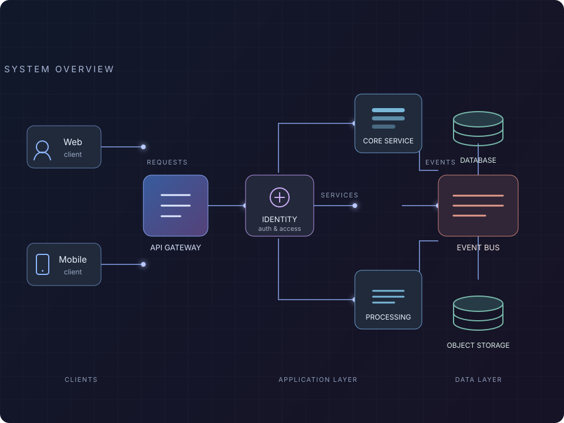

Senior .NET developer · Bucharest, Romania
01 / Introduction
Building the
digital backbone.
I'm Alexandru Ovedenie, a senior .NET developer in Bucharest. I build secure backend services and cloud platforms for banking, connecting APIs, event-driven systems, and data infrastructure. My experience spans retail banking, lending, engineering tools, and software and firmware development.

02 / ING Romania · Mar 2023–Present
Engineering
for trust.
As a Senior .NET Engineer in an Agile banking environment, I develop features for Retail Daily Banking and Investments, with prior experience in Retail Lending. I build .NET Core and .NET Framework services, integrate REST and SOAP APIs with internal BPM and banking systems, and support asynchronous processing, long-term data retention, and real-time event streaming.
My work includes online onboarding and digital identity verification, instant credit-score reporting and lending risk flows, compliance evidence archiving with GDPR-compliant retention and deletion, and card-delivery orchestration for products such as savings accounts and insurance. I also integrate Google AI APIs into application features and use Copilot to accelerate code generation, refactoring, and unit testing. As a certified Red Security Champion, I help establish secure coding practices, automated scans, and pipeline quality gates.
03 / HARMAN International · Jun 2019–Mar 2023
Platforms &
exchange services.
As part of the Global Engineering Tools team, I developed in-house tools, web platforms, exchange services, REST APIs, and process automation. I designed solutions from customer requirements, documented them, created test cases, and collaborated with teams worldwide in Agile workflows.
I built, deployed, and maintained applications on Windows and Red Hat or Ubuntu Linux, configuring Nginx and working with Apache and IIS. Source control included Gerrit, Git, and Perforce; delivery and collaboration used JIRA and IBM ALM.
04 / Infineon Technologies · Jun 2017–Jul 2019
Software &
firmware.
I started at Infineon as a summer intern and continued as an Application System Engineer. I developed C# .NET Framework desktop software to interface with hardware, including multithreaded GUIs, real-time data processing and visualization, data export, and installer packages. I also worked on C/C++ firmware and microcontroller programming for custom hardware.
05 / Education & selected projects
Curiosity with
an engineering core.
I earned a Bachelor's degree (2014–2018) in Computer Engineering, Programming and Telecommunications, and Applied Electronics at the Faculty of Electronics, Telecommunications and Information Technology, University Politehnica of Bucharest.
Outside of work, I have built a Vue.js fitness and nutrition website, machine-learning projects for image-to-text recognition and vocal detection, and a Java client-server messaging app. My self-taught Android smart-home app, with SQLite storage and internet-connected device controls, placed second in a Samsung and Leaders Foundation contest and third at MobilePro by LSE. Other hands-on projects include Arduino and GPS integrations, MySQL CRUD applications, and microcontroller programming.